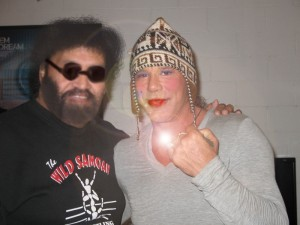

In Theaters This Week: The Wrestler: Feel Good Movie of the Year

Check it out people! The Wrestler from Fox Searchlight Pictures opened in theaters this week. Charlize Theron has reprised her role as serial killer Aileen Wuornos in the long awaited sequel to Monster.
The Wrestler, also known as Monster 2 in European theaters, is an alternate reality thriller in which Wuornos has been acquitted of all charges and shunned by her lover Shelby. She must seek out some sort of existence for herself that will help her channel all the rage built up from being falsely accused of serial killing and losing the love of her life.
During her incarceration she passed the time with body building and prayer. She found Jesus and now she was going to find a paycheck. She hitches her way up the East Coast and in New Jersey she is befriended by retired wrestler Randy the Ram Robinson. Wournos later kills him, in a fit jealously over his hair, then takes on his name and persona.
She finds her niche in the independent circuit of professional wrestling and takes his name on the road to comeback.

By the end of the film she finds herself a new life, a quirky hat, and a new love. At her final match she meets a blind man who falls madly in love with her. Overcome with emotion, Wournos unintentionally kills him with a half nelson of love right after he presents her with a stunning engagement ring.
Related posts


Animatronic Santa Charged in Slayings of 267 Children Over 46 Years
1962 - a time of innocence. Americans were obsessed with the future and all the wonders it would bring. It…

Burnty Goodness Billboard Sneak Preview
This is the sneak preview of the “Burnty Goodness” Billboard to be rolled out later this year. Artwork for this…

You Probably Think This War Is About You
Forget World War III, that's so 80's. The real threat is the Carly Simon Wars. Marily Manson, interviewed on Omaha…